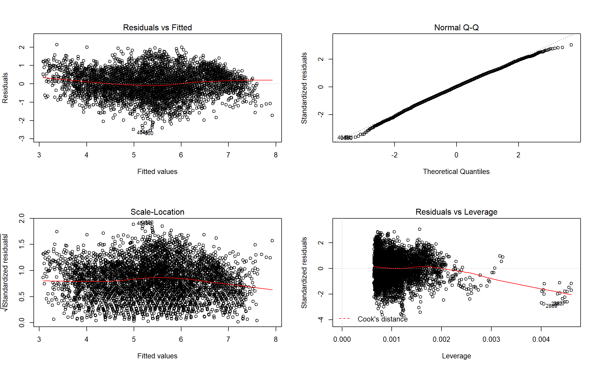

Add countrycode
## Joining, by = c("country_name", "year", "life_ladder")| model_name | r.squared | adj.r.squared | sigma | statistic | p.value | df | logLik | AIC | BIC | deviance | df.residual |
|---|---|---|---|---|---|---|---|---|---|---|---|
| lm1 | 0.5739112 | 0.5738191 | 0.7695231 | 6230.89229 | 0 | 2 | -5353.384 | 10712.768 | 10732.088 | 2739.359 | 4626 |
| lm2 | 0.0264928 | 0.0262788 | 1.1655225 | 123.76836 | 0 | 2 | -7152.091 | 14310.182 | 14329.451 | 6178.197 | 4548 |
| lm3 | 0.0311031 | 0.0306890 | 1.1624320 | 75.10165 | 0 | 3 | -7346.678 | 14701.356 | 14727.162 | 6322.490 | 4679 |
| lm4 | 0.6078094 | 0.6076369 | 0.7398564 | 3523.42638 | 0 | 3 | -5083.758 | 10175.517 | 10201.208 | 2488.971 | 4547 |
| lm5 | 0.6123450 | 0.6120935 | 0.7341558 | 2434.71098 | 0 | 4 | -5134.637 | 10279.274 | 10311.473 | 2492.265 | 4624 |
| lm6 | 0.0583404 | 0.0577190 | 1.1465514 | 93.88232 | 0 | 4 | -7076.422 | 14162.843 | 14194.957 | 5976.082 | 4546 |
| lm7 | 0.6471711 | 0.6468606 | 0.7019019 | 2084.14954 | 0 | 5 | -4843.144 | 9698.287 | 9736.825 | 2239.168 | 4545 |
| lm8 | 0.6171771 | 0.6169245 | 0.7310474 | 2442.98100 | 0 | 4 | -5028.759 | 10067.518 | 10099.633 | 2429.520 | 4546 |
| lm9 | 0.6124203 | 0.6120010 | 0.7342433 | 1460.65764 | 0 | 6 | -5134.188 | 10282.376 | 10327.455 | 2491.781 | 4622 |
| lm10 | 0.0655240 | 0.0644957 | 1.1424211 | 63.72363 | 0 | 6 | -7059.000 | 14132.000 | 14176.960 | 5930.492 | 4544 |

##
## Call:
## lm(formula = ladder ~ gdp + generosity + age, data = df)
##
## Residuals:
## Min 1Q Median 3Q Max
## -2.58626 -0.46309 0.01696 0.49522 2.13073
##
## Coefficients:
## Estimate Std. Error t value Pr(>|t|)
## (Intercept) -1.395320 0.083238 -16.76 <2e-16 ***
## gdp 0.775024 0.008899 87.09 <2e-16 ***
## generosity 1.349385 0.064549 20.91 <2e-16 ***
## age30-49 -0.357701 0.025406 -14.08 <2e-16 ***
## age50+ -0.571217 0.025647 -22.27 <2e-16 ***
## ---
## Signif. codes: 0 '***' 0.001 '**' 0.01 '*' 0.05 '.' 0.1 ' ' 1
##
## Residual standard error: 0.7019 on 4545 degrees of freedom
## (132 observations deleted due to missingness)
## Multiple R-squared: 0.6472, Adjusted R-squared: 0.6469
## F-statistic: 2084 on 4 and 4545 DF, p-value: < 2.2e-16To explore what are the key variables that influence life ladder, we built four different linear regression models. Model 1 describes assocaition between gdp and life ladder. Model 2 describes association between generosity and life ladder. Model 3 describes an association in which both gdp and generosity together contribute to life ladder. Model 4 indifactes that the interaction of gdp and generosity contributes to life ladder.
First let’s take a look at the significance of slope coeficcients. In all the models,gdp, generosity and their interaction term are highly significant. Thus we conclude that they are all importang potential variables for outcome life ladder.
The goodness of fit for those models is also an essential criteria when choosing the best model. In linear regression model, model 3 and 4 have the highest goodness of fit. In smooth model, model 3 has the highest goodness of fit.
From above we decided to choose from model 3 and 4. Therefore we used ANOVA to compare those two models. The ANOVA result has a p value lower than 0.05, and according to hypothesis, we decided model 4 is the better model.
(put plots here)
Diagnostic for those models indicate that fro all the models, their residuls are approximately normally distributed and have constance variance.
One the the main purpose of this study is to d=find a model that fan help us predict life ladder from key variables. Since we built four models, we shoudl also find out which model is best in predicting the outcome.
Corss validations for those models indicate that model1 and 3 work much better than model 2. Therefore there might be a stronger linear association between gdp and life ladder, and linear assocaition for life ladder versus gdp and generosity.
Most of us hold the traditional view that the more money you have, the happier you will be.
Also, humans are an extremely prosocial species. Compared to most primates, humans provide more assistance to family, friends, and strangers, even when costly. Some evidence indicate that there is well-being benefits from donating money.
Both related to money, what’s the association between these two variable and happiness?
happiness represent the happiness score or subjective well-being which was measured by the Gallup World Poll(GWP) covering years from 2005 to 2018,
gdp represent the log transformation of statistics of GDP per capita in purchasing power parity(PPP) at constant 2011 international dollar prices are from the November 14,2018 update of the World Development Indicators (WDI).
generosity is the residual of regressing national average of response to the GWPquestion “Have you donated money to a charity in the past month?” on GDP per capita.
In the process of regression, we choose 4 linear regression model and 3 smooth model to study the association between happiness, gdp and generosity. Their regression equation are shown below.
lm1:\[Y_{happiness} = \beta_0 + \beta_1X_{gdp}\]
lm2:\[Y_{happiness} = \beta_0 + \beta_1X_{generosity}\]
lm3:\[Y_{happiness} = \beta_0 + \beta_1X_{gdp} + \beta_2X_{generosity}\]
lm4:\[Y_{happiness} = \beta_0 + \beta_1X_{gdp} + \beta_2X_{generosity} + \beta_3X_{gdp} * X_{generosity}\]
Therefore, I would like to choose the lm7, i.e. \[Y_{happiness} = -1.39 + 0.77X_{gdp} + 1.36 X_{generosity} + (-0.36)I(age=30-49) + (-0.57)I(age = 50 +)\]
According to the plot above, RMSE of lm7 is the lowest, which show that lm7 work best among all our linear model to fit test data!
We made some assumptions regarding residuals like normality distribution and constant variance of residuals. According to the diagnostic above, residuals vs fitted and scale-location indicate the constant variance of residuals is satisfied. QQ plot demonstrate residuals follow normal distribution. And the residuals vs leveragge prove there are no obvious influencial observation in out dataset.
The procedure of our regression indicate that age, gdp and generosity are associated with happiness. All of them can be treated as reasonable predictor.